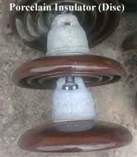
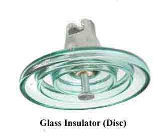
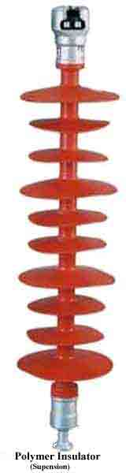

Properties of Insulating Material
Porcelain Insulator
Properties of Porcelain Insulator
Glass Insulator
Advantages of Glass Insulator
Disadvantages of Glass Insulator
Properties of Glass Insulator
Polymer Insulator
Advantages of Polymer Insulator
Disadvantages of Polymer Insulator
Types of Insulator
Electrical Insulator must be used in electrical system to prevent unwanted flow of electric current to the earth from its supporting points. The insulator plays a vital role in electrical system. Electrical Insulator is a very high resistive path through which practically no electric current can flow. In transmission and distribution system, the overhead conductors are generally supported by supporting towers or poles. The towers and poles both are properly grounded. So there must be insulator between tower or pole body and electric current carrying conductors to prevent the flow of electric current from conductor to earth through the grounded supporting towers or poles.
Insulating Material
The main cause of failure of overhead line insulator, is flash over, occurs in between line and earth during abnormal over voltage in the system. During this flash over, the huge heat produced by arcing, causes puncher in insulator body. Viewing this phenomenon the materials used for electrical insulator, has to posses some specific properties.
Properties of Insulating Material
The materials generally used for insulating purpose is called insulating material. For successful utilization, this material should have some specific properties as listed below-
1. It must be mechanically strong enough to carry tension and weight of conductors.
2. It must have very high dielectric strength to withstand the voltage stresses in High Voltage system.
3. It must possesses high Insulation Resistance to prevent leakage electric current to the earth.
4. The insulating material must be free from unwanted impurities.
5. It should not be porous.
6. There must not be any entrance on the surface of electrical insulator so that the moisture or gases can enter in it.
7. There physical as well as electrical properties must be less effected by changing temperature.
Porcelain Insulator

Porcelain in most commonly used material for over head insulator in present days. The porcelain is aluminium silicate. The aluminium silicate is mixed with plastic kaolin, feldspar and quartz to obtain final hard and glazed porcelain insulator material. The surface of the insulator should be glazed enough so that water should not be traced on it. Porcelain also should be free from porosity since porosity is the main cause of deterioration of its dielectric property. It must also be free from any impurity and air bubble inside the material which may affect the insulator properties.
Properties of Porcelain Insulator
| Property | Value(Approximate) |
|---|---|
| Dielectric Straingth | 60 KV / cm |
| Compressive Strength | 70,000 Kg / cm2 |
| Tensile Strength | 500 Kg / cm2 |
Glass Insulator
Now days glass insulator has become popular in transmission and distribution system. Annealed tough glass is used for insulating purpose. Glass insulator has numbers of advantages over conventional porcelain insulator<

Advantages of Glass Insulator
1. It has very high dielectric strength compared to porcelain.
2. Its resistivity is also very high.
3. It has low coefficient of thermal expansion.
4. It has higher tensile strength compared to porcelain insulator.
5. As it is transparent in nature the is not heated up in sunlight as porcelain.
6. The impurities and air bubble can be easily detected inside the glass insulator body because of its transparency.
7. Glass has very long service life as because mechanical and electrical properties of glass do not be affected by ageing.
8. After all, glass is cheaper than porcelain.
Disadvantages of Glass Insulator
1. Moisture can easily condensed on glass surface and hence air dust will be deposited on the wed glass surface which will provide path to the leakage electric current of the system.
2. For higher voltage glass can not be cast in irregular shapes since due to irregular cooling internal cooling internal strains are caused.
Properties of Glass Insulator
| Property | Value(Approximate) |
|---|---|
| Dielectric Straingth | 140 KV / cm |
| Compressive Strength | 10,000 Kg / cm2 |
| Tensile Strength | 35,000 Kg / cm2 |

Polymer Insulator
In a polymer insulator has two parts, one is glass fiber reinforced epoxy resin rod shaped core and other is silicone rubber or EPDM (Ethylene Propylene Diene Monomer) made weather sheds. Rod shaped core is covered by weather sheds. Weather sheds protect the insulator core from outside environment. As it is made of two parts, core and weather sheds, polymer insulator is also called composite insulator. The rod shaped core is fixed with Hop dip galvanized cast steel made end fittings in both sides.
Advantages of Polymer Insulator
1. It is very light weight compared to porcelain and glass insulator.
2. As the composite insulator is flexible the chance of breakage becomes minimum.
3. Because of lighter in weight and smaller in size, this insulator has lower installation cost.
4. It has higher tensile strength compared to porcelain insulator.
5. Its performance is better particularly in polluted areas.
6. Due to lighter weight polymer insulator imposes less load to the supporting structure.
7. Less cleaning is required due to hydrophobic nature of the insulator.
Disadvantages of Polymer Insulator
1. Moisture may enter in the core if there is any unwanted gap between core and weather sheds. This may cause electrical failure of the insulator.
2. Over crimping in end fittings may result to cracks in the core which leads to mechanical failure of polymer insulator.
In addition to these, some other disadvantages might be experienced. Let us give a practical example where many difficulties are faced in maintaining a distribution network in Victoria Australia due to polymeric insulator.
There are many Cockatoos, Galahs & Parrots in that area of Australia, which love to chew on polymeric strain insulators. Here, the 22KV network has many of polymeric strain insulators installed and now after a few years of installing polymeric strain insulators, the authority is now replacing many of them back with Glass disc insulators.
Another disadvantage is that they have had post type polymeric insulators melt and bend in bushfire areas. They have a concrete pole and a steel cross arm that survives a bushfire, however the polymers in some cases fail. This would not be the case with glass or porcelain insulators.
They have also had polymeric insulators fail in areas close to the ocean coastline where there are high salt levels in the air.
- Subject to bird attack by Parrots, Cockatoos & Galahs.
- Not resilient to bushfire temperatures.
- Not recommended for location near surf beaches due to salt spray.
The information is contributed by Robert Lancaster of Australian Electricity Supply Industry
Types of Insulator
There are mainly three types of insulator likewise
1. Pin Insulator
2. Suspension Insulator
3. Stray Insulator
In addition to that there are other two types of electrical insulator available mainly for low voltage application, e.i. stay insulator and shackle insulator.
 by
by